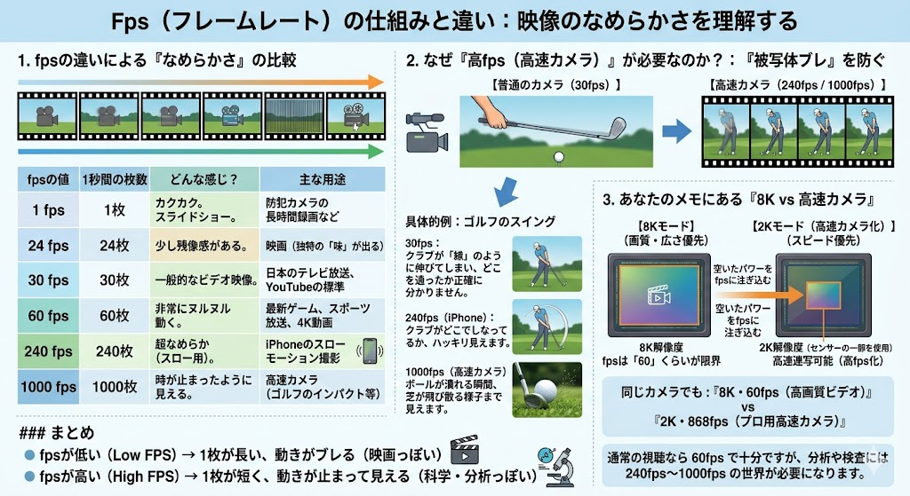
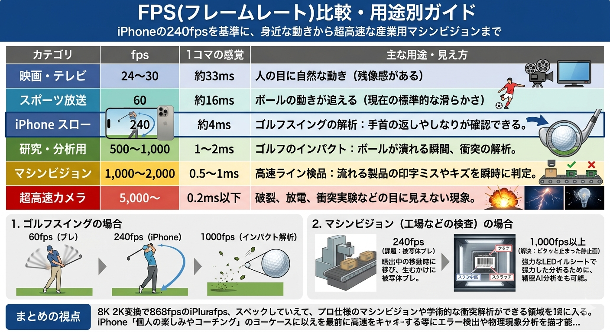

【背景・課題】動体観測における物理的限界
映像技術におけるフレームレート（fps）は、1秒間に処理される静止画の枚数を規定する。一般的なビデオ映像（30fps）やスポーツ放送（60fps）は、人間の視覚特性に最適化されているが、高速移動する物体の解析においては「被写体ブレ」という物理的課題に直面する。

1枚のフレームが保持する露出時間内に物体が大きく移動すると、画像エッジが不鮮明になり、幾何学的な計測が不可能となる。特に製造ラインの高速検品や科学実験の衝突解析では、ミリ秒単位の現象を「静止」状態で捉えるための時間分解能が不可欠である。
【解決策】fpsの最適化と用途別技術ガイド
fpsの向上は、サンプリング周期を短縮し、各コマの「ブレ」を物理的に最小化する。民生用の240fpsから、産業用の5,000fps超に至るまで、解析対象の速度に応じた最適なフレームレートの選択が必要である。

| カテゴリ | fps領域 | 1コマの時間軸 | 技術的用途・解析対象 |
|---|---|---|---|
| 映画・テレビ放送 | 24〜30 | 約33ms | 視覚的残像を活かした自然な動画表現 |
| スポーツ・4K動画 | 60 | 約16ms | ボールの挙動追従、標準的な滑らかさ |
| 民生用スロー | 240 | 約4ms | ゴルフスイング、身体動作のフォーム確認 |
| 研究・物理分析 | 500〜1,000 | 1〜2ms | インパクトの瞬間、ボールの変形、破壊解析 |
| マシンビジョン | 1,000〜2,000 | 0.5〜1ms | 高速インライン検品、印字ミス、キズの判定 |
| 超高速カメラ | 5,000〜 | 0.2ms以下 | 放電現象、エンジン燃焼、素材の破断過程 |
1. ビットレートの物理的定義
ビットレートとは、単位時間（1秒間）あたりに処理・伝送されるデータ量を指す。これはデジタル映像における「情報の密度」であり、解像度が画用紙のサイズ、FPSがパラパラ漫画の枚数であるならば、ビットレートはそこに投入可能な「描画リソース（絵の具の量）」に相当する。

図1：映像品質を決定する三要素の相関モデル (bit.png)
情報の「器」がどれほど大きくとも、内部を構成するデータが欠落すれば、視覚的な忠実度は著しく損なわれる。これがビットレート不足による画質劣化の物理的原点である。
2. 技術原理：量子化とブロックノイズの発生
ビットレートが不足した際、エンコーダーはデータ量を削減するために情報の量子化（間引き）を強化する。この結果、以下のような現象が顕著に発生する。
ブロックノイズ
情報を格子状のブロック単位で近似処理することで、四角いモザイク状の歪みが発生する。特に激しい動きを伴うシーンで発生しやすい。
テクスチャの消失
微細なディテールが「塗りつぶし」として処理され、被写体の質感が失われる。低ビットレート設定時の代表的な副作用である。
| 要素 | 高くした場合 | 低くした場合 |
|---|---|---|
| 解像度 | 精細・鮮明な描写 | 輪郭のジャギー・ボケ |
| FPS | 滑らかな動解像度 | コマ落ち・カクつき |
| ビットレート | 高い質感・低ノイズ | ブロックノイズ・汚染 |
3. 産業的インパクトと最適化の意義
単にビットレートを上げれば品質は向上するが、それはファイルサイズの増大と伝送コストの上昇を意味する。工学的な「最適化」とは、人間の視覚特性（HVS）を利用し、画質低下を感じさせない最低限のビットレートを維持することにある。
この動的なバランス制御は、現代のストリーミングサービスや通信インフラにおいて、ネットワーク帯域の有効活用とユーザー体験の最大化を両立させるための核心技術となっている。